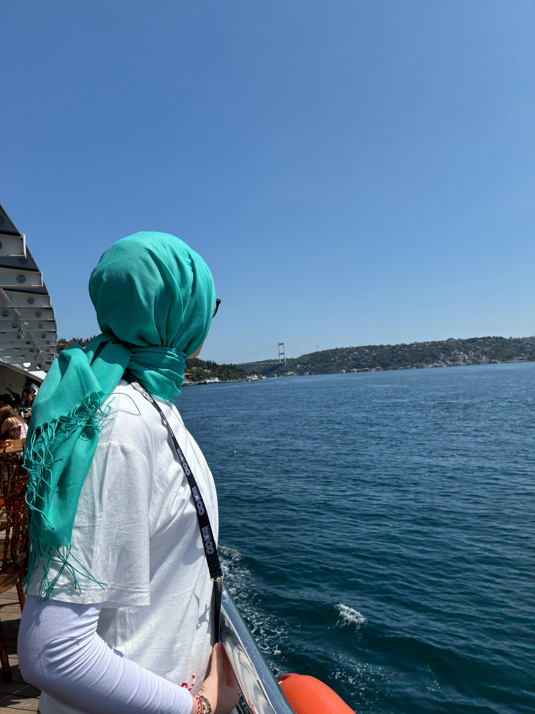
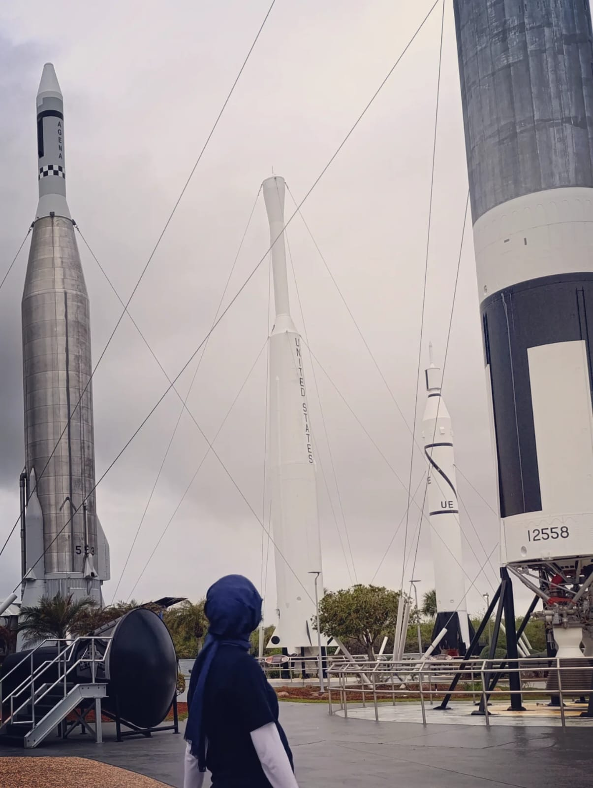
Hi! I'm Berra right here →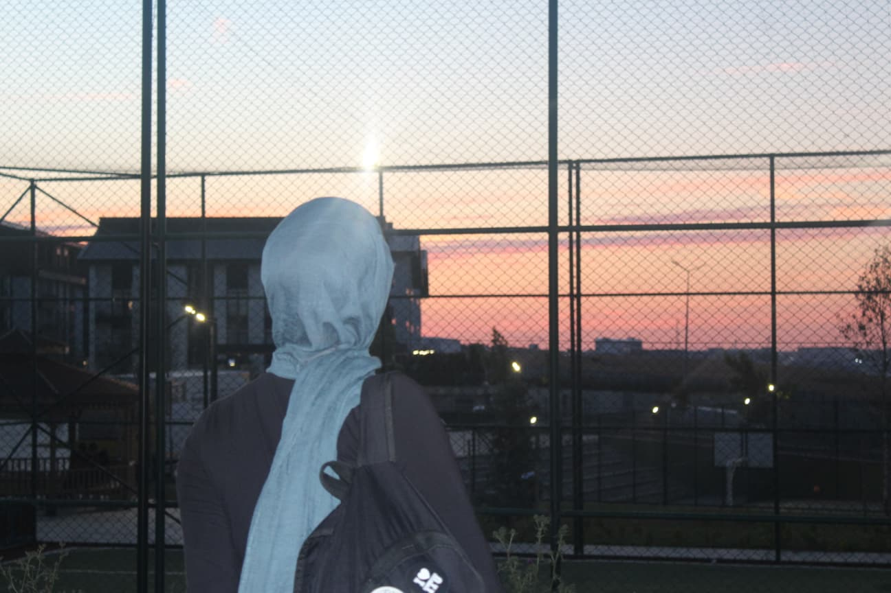
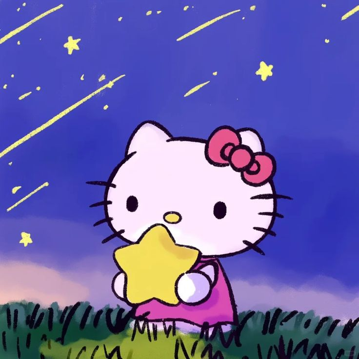
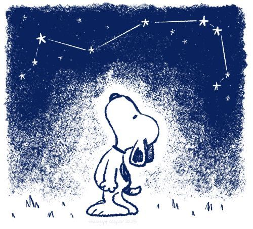
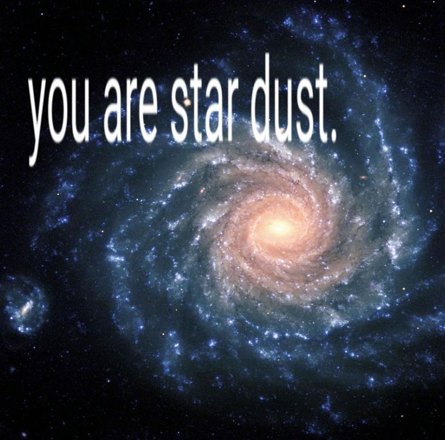
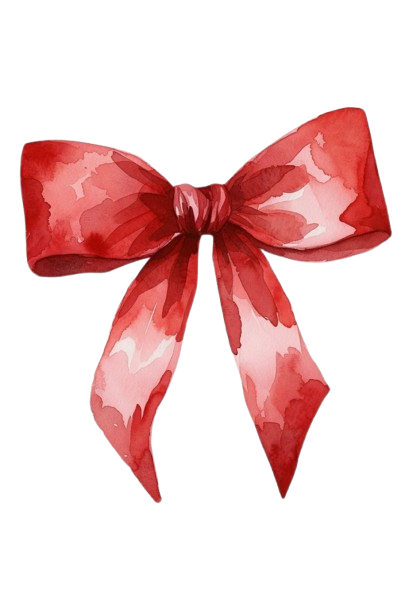
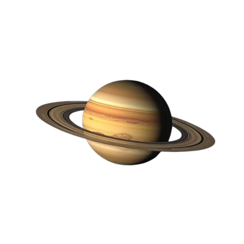
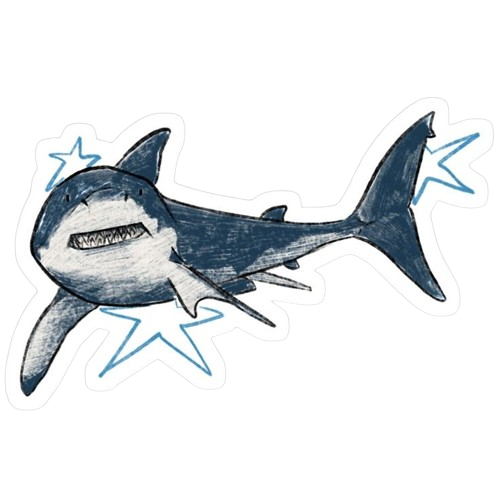
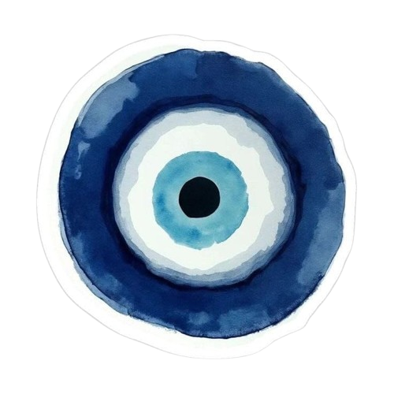
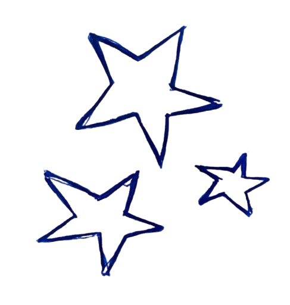
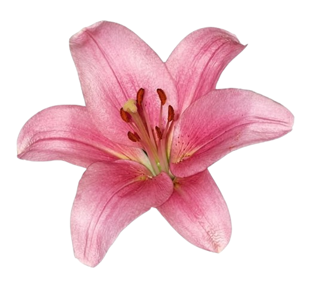
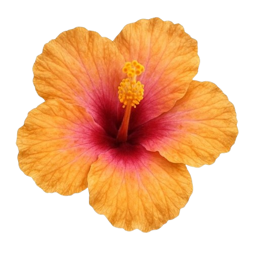
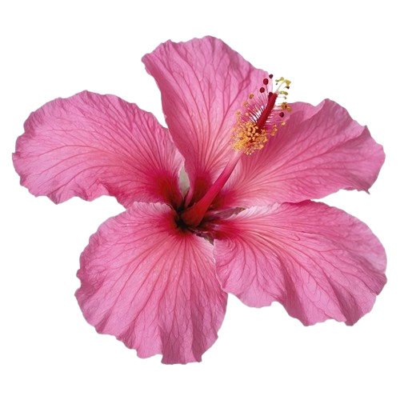
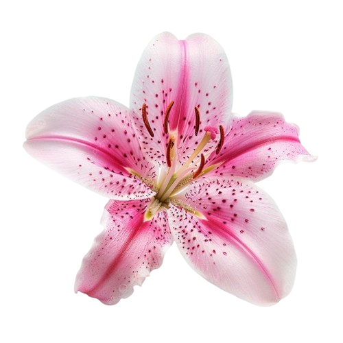
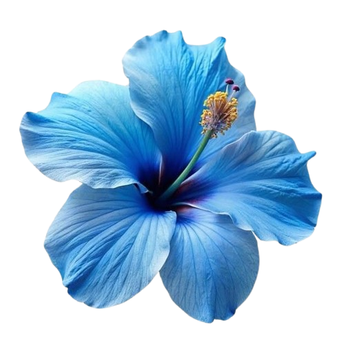
Hello, I'm Berra! ˚⋆🚀🪐✨❀ 🐚🫧𓇼 ˖°
I am a 10th-grade student at Baykar High School of Science and a student at the National Science and Art Center (BİLSEM). I am deeply interested in technology, science in general, astrophysics, aviation, and space, as well as music, art, and creative projects. I love creating, researching, and developing original ideas by connecting different fields.
Driven by curiosity, I am on a boundless learning journey: I might be working on 3D modeling one day and writing or composing a song the next; discussing global issues at a Model UN conference one day and illustrating what's on my mind the next. Instead of confining myself to a single domain, chasing everything that piques my curiosity is my greatest motivation.
Along with my native Turkish, I speak English at a B2+ level and I am actively learning Chinese and Italian. I created this page as a space to share my personal learning journey, discoveries, and creations with you.